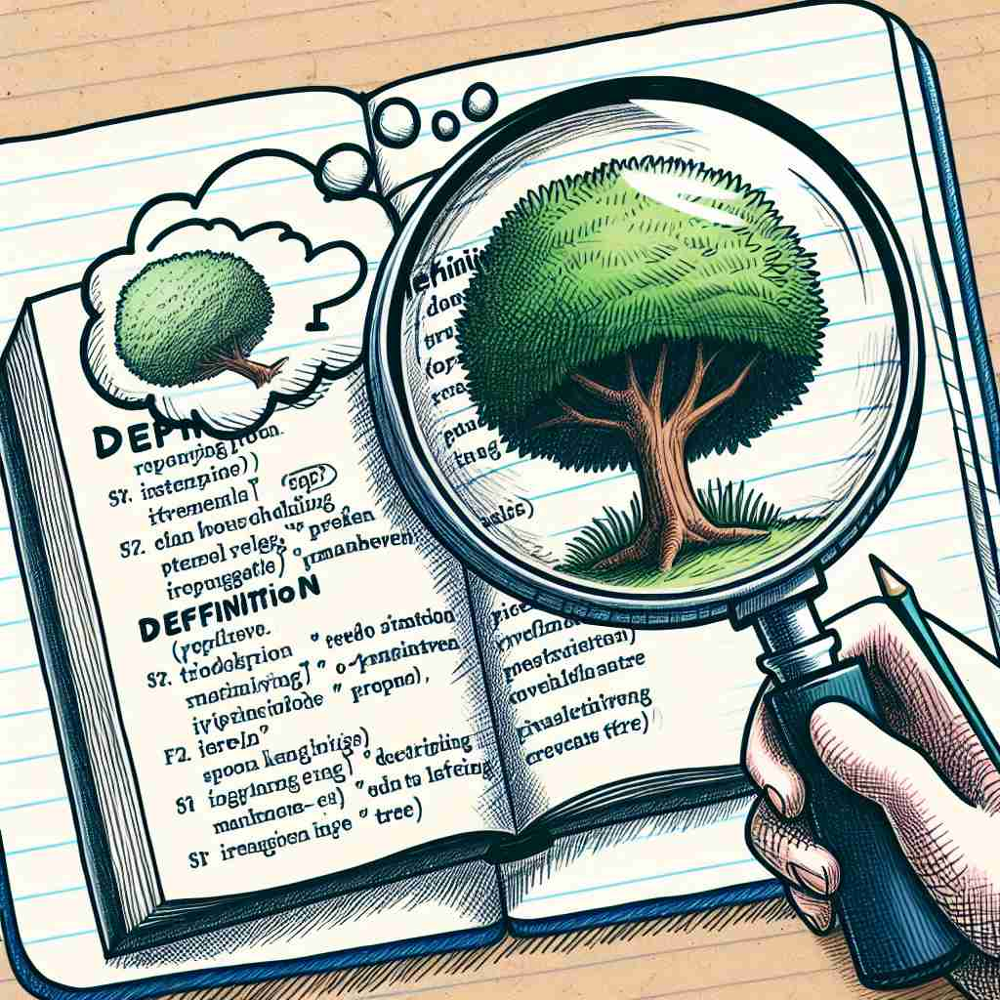

💬 The book provides a clear word definition for the term 'tree.' 这本书对“树”这个术语提供了清晰的词语定义。

💬 Each word has a specific word definition in the dictionary. 每个词在字典中都有特定的词义。
💬 The book provides a clear word definition for the term 'tree.' 这本书对“树”这个术语提供了清晰的词语定义。
💬 Each word has a specific word definition in the dictionary. 每个词在字典中都有特定的词义。
🧠 想象'definition'是一个清晰的轮廓或边界。无论是词语意义、概念范围，还是图像声音的清晰度，都是在为某事物划定清晰的界限。这个核心概念贯穿了'definition'的各种用法，有助于理解和记忆它的多重含义。
🔈 [defɪ'nɪʃ(ə)n]
🗝️ n. a statement that explains the meaning of a word or phrase 解释一个词或短语含义的陈述
🎭 在一个图书馆里，一位英语老师正在指导学生。她指着词典中的一个词条，耐心地解释这个词的定义，避免学生在使用时产生误解。
💬 The dictionary provides a clear definition of the term. 词典对该术语提供了明确的定义。
🌳 由词根 "defin-"（界定、限制）和名词后缀 "-tion" 组成，表示 "定义、解释"。
💡 记忆 "definition" 时，可以联想把 "define" 加上名词化的后缀 "-tion"，从而表示对事物进行界定或定义的行为或结果。
🗝️ n. the act of stating the meaning of a word or phrase 说明一个词语或短语的含义的行为
🎭 在课堂上，学生们分组进行讨论，每个人都轮流站起来描述某个单词的意义，这个过程本身就是定义的体现。
💬 The definition of technical terms is crucial in scientific writing. 在科学写作中，专业术语的定义至关重要。
🤔 从解释词义的结果扩展到解释的行为
🗝️ n. a statement of the exact nature or scope of something 有关某事物精确性质或范围的陈述
🎭 在一间会议室中，项目经理正在为团队详细说明新项目的范围和目标，确保每个成员对任务有明确的认识。
💬 There is some disagreement over the definition of human rights. 关于人权的定义存在一些分歧。
🤔 从解释词义扩展到解释事物的本质或范围
🗝️ n. clarity of visual presentation or sound reproduction 视觉呈现或声音重现的清晰度
🎭 在一家电子商店里，顾客正在体验最新的高清电视。他评论说画面的清晰度令人惊叹，这种清晰度即是 'definition' 在视觉呈现中的应用。
💬 This camera produces images with excellent definition. 这台相机拍摄的图像清晰度极高。
🤔 从语言的清晰解释引申到图像或声音的清晰度
🗝️ n. the degree of distinctness of the details in an image 图像细节的清晰度程度
🎭 在摄影比赛的颁奖典礼上，评委指出获奖作品的照片细节极其清晰，每个细节都被完美地捕捉，展示了极高的图像定义。
💬 High definition televisions offer superior picture quality. 高清电视提供卓越的画质。
🤔 从概念的清晰界定延伸到图像细节的清晰程度